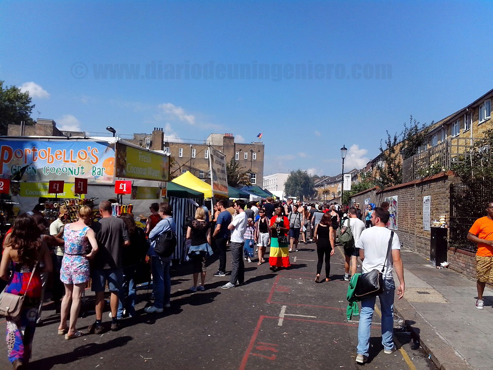
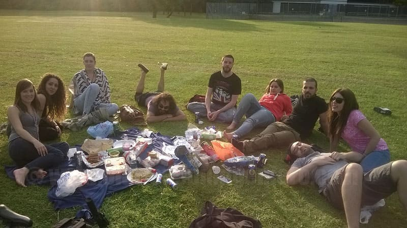

Seguro que muchos antes de embarcarse al Reino Unido tiene algo de idea de cómo se entretienen los ingleses.
Si bien parece que son muy diferentes respecto a los españoles, sí que es cierto que dentro de la unión europea los ingleses son los que más les gusta salir por
la noche solo que ellos salen mucho antes. Y muchas veces ni cenan antes de salir.
Todo esto que digo es de los auténticos ingleses, gente que ha nacido en Inglaterra y que sus familias llevan generaciones ya que estos tópicos por ejemplo si hablas de Londres o de ciudades con una multiculturalidad muy elevada no es apreciable, aun siendo Inglaterra uno de los países donde la inmigración mejor se ha integrado con la gente local tratando a las personas como una más y no haciendo distinción de raza y religión.
Es una de las cosas que siempre me gusto de Inglaterra aunque luego parece que se pierde la identidad del pais.

Muchos de los bares que hoy tenemos en España tienen cierta estética a los bares ingleses también conocidos como pubs. Aquí un bar lo entendemos mejor como un establecimiento que abre a cualquier hora y el pub está orientado más al ocio nocturno. Si bien allí un pub es como un bar en España alli lo que se bebe es cerveza y hay diferentes marcas como en España. Se suele pedir en la unidad de medida de allí la pinta.
Una pinta es equivalente a 650ml, y es como una jarra de cerveza aquí. El precio oscila entre las 2.5 libras y las 5 libras. Muchas veces tienen sale más económico pedir la cerveza de la marca del bar o local del bar que puede llegar incluso a 2 libras. Por eso está bien saberlo.
En Reino Unido al igual que España el futbol o soccer es el deporte rey. Por lo general los bares están llenos de anuncios con el los partidos
de futbol siendo el segundo país de Europa junto con España, Alemania e Italia donde más seguidores tiene.
Al igual que España los ingleses también son bastante aficionados a los practicar deportes, y existen multitud de gimnasios y parques donde realizar actividades.
Si bien debido al mal tiempo muchos parques están algo vacíos durante casi todo el año hasta que llega el verano y se colapsan.
A veces da la impresión de que tanta cultura del deporte no está reflejada en los cuerpos de la gente porque hay mucha obesidad. Esto es más bien debido a la mala cultura de la alimentación que tienen, a su poca pasión por la cocina ya que casi todo lo compra precocinado y a que existe cierta devoción por la comida rapida, precocinada o fritos. A veces he tenido la sensación de que los ingleses comen porque es necesario
para vivir, pero no disfrutan de la comida diariamente si no que solo cuando están acompañados de amigos y salen a restaurantes porque si bien la mayoría de los alimentos son importados en los supermercados puedes encontrar de todo para tener una dieta sana y últimamente las autoridades locales están haciendo un esfuerzo, etiquetando los alimentos en función del azúcar y sal que tienen y de lo saludable que son. Luego si es cierto que hay una minoría que son más amantes que los españoles incluso del buen comer.
Hay mucha gente que llega a Reino Unido y pasa el mayor tiempo en grandes ciudades como Londres, Birmingham o Manchester y no llegan a apreciar el estilo inglés al 100% y no llegan a convivir con muchos ingleses menos abiertos de mente y más anclados en su forma de vida. Esta ciudad es un ejemplo de este tipo de ciudades donde casi el 80% son ingleses autóctonos.
La ciudad formada mayormente por casas grandes y bajas y por una calle comercial, ejemplo de ciudad tranquila y aislada un poco del exterior.
Además cuenta con un parue empresarial la ciudad con empresas bastante punteras de tecnología sobre todo.
Lo más destacable a parte de la multitud de parques y zonas verdes era el gran carril bici que bordeaba la ciudad y la atravesaba en las cuatro direcciones, siendo la mayoría de los pueblos transitables por ellas. Las grandes ciudades estaban preparadas pero debido a la masificación y a los nuevos tiempos donde circula todo tipo de individuos ocurren muchas desgracias. De hecho en Londres se incrementa cada año las muertes a ciclistas en un gran porcentaje.

Yo estuve trabajando en NSN, actualmente renombrada a Nokia Networks, en un ambiente bastante distendido donde casi la mayoría vivía en otras ciudades y de orígenes diversos. En Inglaterra
normalmente en las ciudades pequeñas, suele haber bastantes instalaciones agrícolas pero este no es el caso, ya que el motor eran las agencias de alquiler ya que
estaba experimentando una burbuja inmobiliaria importante, los comercios y el parque empresarial.
Como todos los sábados en Inglaterra contaba con un mercadillo donde obtener toda clase de bienes de consumo, y sobre todo artesanales. Las verduras a diferencia
de España son todas importadas, así que aunque te las pinten como recién sacadas de la huerta están llenas de conservantes. Lo mejor es poder comprar
pan en condiciones ya que en los supermercados deja mucho que desear. Puedes comprar en algunos mercados de algunas ciudades sobre todo costeras buen pescado, en
otras lo traen de la costa y está también bastante fresco.
Aparte existía un par de campos de golf bastante grandes y multitud de parques e instalaciones deportivas y colegios privados de bastante prestigio en la zona.
El alquiler medio de una vivienda en Fleet era un 30% superior a cualquier ciudad de alrededor.
Además contaba como atractivo turístico con el mayor lago de agua dulce del Reino Unido donde poder pasear y desconectar tanto a pie como en bicicleta como muestro en las imágenes.
© 2016 - All Rights Reserved - Diseñada por Sergio López Martínez
![[Valid RSS]](https://www.feedvalidator.org/images/valid-rss-rogers.png "Validate my RSS feed")